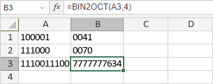

BIN2OCT funkcija
Funkcija BIN2OCT je jedna od inženjerskih funkcija. Koristi se za konvertovanje binarnog broja u oktalni broj.
Sintaksa
BIN2OCT(number, [places])
Funkcija BIN2OCT ima sledeće argumente:
| Argument | Opis |
|---|---|
| number | Binarni broj unet ručno ili sadržan u ćeliji na koju se pozivate. |
| places | Broj cifara koje treba prikazati. Ako se izostavi, funkcija će koristiti minimalan broj. |
Napomene
Ako argument nije prepoznat kao binarni broj, ili sadrži više od 10 karaktera, ili rezultujući oktalni broj zahteva više cifara nego što ste naveli, ili je zadati broj places manji ili jednak 0, funkcija će vratiti grešku #NUM!.
Kako primeniti funkciju BIN2OCT.
Primeri
Slika ispod prikazuje rezultat koji vraća funkcija BIN2OCT.
